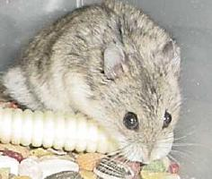

| She scooped him up from the birthing cage in a coconut shell and said, "They've both been biting all day." The little guy looked less like Cujo than a tiny dwarf Campbells normal a little over three weeks old. "Their third brother was attacked last night, and he's the smallest now. Can you take him?" He toddled out of the shell into my hand, strolled up my arm and snuggled into the crook of my elbow. Max crawled around on me, accepted rubs and smooches, and never once tried to bite. "He's already mine." There never was a happier, more eager, playful little lovey than Max. He was a wee Houdini, but always came back when I looked for him and sang out his special little song. When he was two months old, always active Max started exercising on his wheel much harder than he had been. He ate a lot more than my other, larger Campbells and drank more too. Some days he seemed very tired and off somehow, but he was still his mommy's little cuddlebug. "How much is your dwarf drinking each day?" I saw this question on several hamster message boards and mailing lists, and read an article about diabetes in dwarf Campbells. They described two of my loveys perfectly. I read that diabetes usually appears at 2-3 months of age (early onset), or at 7-10 months (late onset). Symptoms include excessive drinking (Max soon drank 2-3 times his own body weight daily), excessive urination, extreme hunger, dehydration, maniacal exercising and/or extreme lethargy, difficulty maintaining body temperature, and general discomfort. When mine have high glucose levels, they either exercise nonstop or lie around limply and get crabby and bitey. The danger in assuming a ham is diabetic is that excessive drinking can also be caused by treatable bladder and kidney infections. It's important to have their glucose levels confirmed in addition to observing symptoms. My Puppy's result was bad, but Max's was off the charts -- over 20 times the high end of the normal range. When a ham is diagnosed, the first and most important thing to do is prevent dehydration. I started giving 50% Pedialyte (infant rehydration electrolyte solution) and 50% water in his bottle, storing the Pedialyte in the fridge and changing the water daily, because it loses its effectiveness quickly. There's a tiny bit of dextrose in Pedialyte, but it's 100 calories per liter, and the good definitely outweighs this. I also added vitamin drops at slightly above the recommended strength. I read that a diabetic doesn't metabolize food properly, and is always hungry and in danger of malnutrition, even on a perfectly healthful diet. A diabetic needs regular testing to adjust diet by resulting glucose levels. It can be done at home with inexpensive test strips from a pharmacy. They need extra bedding and a warm environment. Potty training is essential, since their urine tends to mold, and that spreads easily to the water bottle also. Increased ventilation helps, as do frequent cage cleanings and spot cleanings. Their home and toys must be extra safe, and severe diabetics are often housed alone to prevent any injury from squabbles. The risk of infection is high and they don't fight them off well. Any injury or illness in a diabetic hamster requires immediate attention. It's also important to watch their teeth, as they're prone to gum disease (Puppy has lost his incisors several times, the uppers permanently.) After watching Puppy and Max and reading everything I could find, I decided never to feed a Campbells under a year old simple sugars, since diabetes does damage silently even before symptoms are evident. I avoid corn, commercial treats and foods containing added sucrose, dextrose, maltose, fructose, lactose, maltodextrins, honey, molasses or other simple sugars in favor of complex carbohydrates (rice, pasta, oats) in addition to a high-quality seed mix. No fresh or dried fruit either -- fructose raises their blood sugar very fast. (continued on page 2) |
| Feature Hamster: Max, a Diabetic Campbells by Jane Landis |
|  |